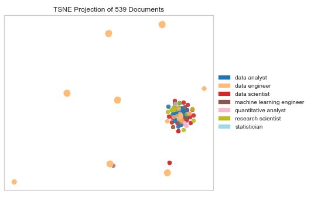
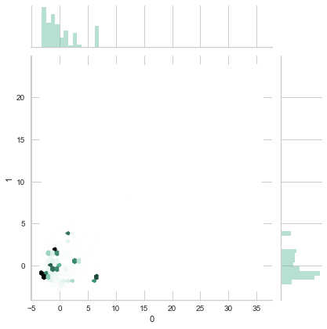

Does Your Skillset Match Up With Current Available Jobs?
To see if we have the skills employers are looking for in the data science world, we decided to look from the employer's point of view by analyzing the data science jobs available on indeed.com. In this approach, we scraped job descriptions (Beautiful Soup) for all data science jobs available on indeed.com. We processed those job desciptions through a TSNE Visualizer in order to identify evident clusters within the dataset and ran a TF-IDF Vectorizer to see the most common words used in each cluster.
The same analysis was performed on all available data science jobs in New York City and New Jersey
Web Scraping and Data Retrieval
First, in order to ignore fuzzy matches from our job searches, we only focused on jobs that had the following word phrases in its job title:
- data scientist
- quantitative analyst
- statistician
- data analyst
- research scientist
- machine learning engineer
- data engineer
3013 Job Postings matched this criteria regardless of location. (NYC - 539, NJ - 102)
Pre-processing Job Description Data
Job Descriptions were then scraped from those matches. These job descriptions were then preprocessed by removing any unneccasary characters and stop words.
TSNE Visualizer
The Job Descriptions were then run through a TSNE Visualizer in order to identify the amount of clusters in the data.

Our inital assumption would be 7 clusters that match the initial Job Class Clusters. Even though Job Class played significance in certain clusters, one main cluster clearly did not emphasize that significance. After heavy squinting, there are 23 clusters.
New York City

In New York, the situation differs in that there clearly 9 clusters in the processed job descriptions.
New Jersey

As per diagram, it would be difficult to identify any key clusters in the NJ dataset.
Creating Cluster WordClouds with ntlk
All job descriptions were then loaded into a TD-IDF Vectorizer and WordClouds were generated for each cluster. We will attempt to write a job summary based off most of the words.
indeed.com WordClouds for All Locations
indeed.com WordClouds for NYC and NJ
Generating a Job Summary from All Job Description
For amusement, we will attempt to create a job summary utilizing all the job descriptions from the dataset. We will use ntlk to tokenize the data by applying the CountVectorizer (one-hot encoding) and TF-IDF transformer (adding weights to the encoding). We can than fit the data into a PCA (Principal Component Anlysis) model in an attempt to reduce the dimensionality of the data.

in order to garher semantic meaning of the words, we will apply a soft cosine matrix.

Based off the diagram, we can define the rectangle of our search for what to use in creating its job summary.
So to summarize all the data scientist positions on indeed.com:
For full site:
About you You have deep interests in customer and market behavior and methods to measure and anticipate it You are passionate about unveiling answers to most difficult questions using data and models You feel accomplished seeing your pricing recommendations being implemented while shopping for yourself You cant stop thinking about learning something new every day and enjoy being surrounded by highly talented people Key responsibilities Develop and apply statistical methods and experimentation to analyze the effect of pricing and sales decisions on business performance Collaborate with internal stakeholders to design and deploy pricing initiatives based upon analytical findings Present results and recommendations to relevant stakeholders, including senior leadership Requirements Must-haves At least years working experience in data science, ideally in a consumer-focused setting Experience in designing, deploying, and analyzing in-market experiments and/or AB tests Ability to think creatively and invent original solutions to business and modelling challenges Proficiency with R and/or Python is required Proficiency in Microsoft Excel and Microsoft Power Point Excellent written and verbal communication skills with an ability to influence key decision makers Master's or Ph D degree in Quantitative Marketing, Business, Statistics, Economics, Psychology, or other relevant quantitative discipline Bonus points for Interest in pricing, economics, and consumer behavior Experience in deploying data science in a retail environment Understanding of CRM and customer segmentation Knowledge of price optimization approaches, price discrimination models and a general knowledge of main concepts from the industrial organization literature Basic understanding of finance and product economics Experience in project and/or product management Reinventing since .
For NYC:
Below is a sampling of projects you can expect to dive into Launch surveys and message tests with the objective of using research findings to craft brand messaging guidance for various post- election scenarios Design and advise on issue-based messaging research and survey instruments for a variety of issues relevant to the ACLU, including voting rights, LGBTQ+ rights, and criminal justice reform Analyze survey, brand tracking, and other quantitative opinion research results to determine attributes about the ACLUs current donor base and potential expansion audiences Handle technical aspects of survey design, including identifying relevant survey universes and appropriate sampling frames, develop innovative sampling designs and statistical analysis procedures for complex projects and proposals, performing sample size and power calculations for complex sample surveys, and performing nonresponse bias analysis and adjustments for missing data MINIMUM QUALIFICATIONS Deep knowledge of quantitative survey methods, including sampling design, nonresponse adjustment procedures, and analysis of data from complex sample surveys Experience designing modern multi-modal surveys and evaluating scripts Fluency in Python or R, or similar analytics and programming languages Familiarity with survey experiments and causal inference Hands-on project experience with statistical methods, machine learning techniques, testing, and/or predictive analysis in service of real-world business challenges Excellent communication skills; ability to synthesize quantitative results for a wide range of non-technical stakeholders across various functions and levels of an organization Commitment to the mission of the ACLU Demonstrate a commitment to diversity within the office using a personal approach that values all individuals and respects differences in regards to race, ethnicity, age, gender identity and expression, sexual orientation, religion, disability and socio-economic circumstance Commitment to work collaboratively and respectfully toward resolving obstacles and/or conflicts PREFERRED QUALIFICATIONS Graduate degree in a relevant field statistics, demography, economics, psychology, social sciences, sociology, policy analysis, survey methodology, biostatistics and - years of experience OR + years of experience executing market research or public opinion and survey research projects in an academic, political campaign, non-profit, or business setting Strong data visualization skills Experience productionizing models or analysis for long-term usage Proficiency in command line tools A strong foundation in relational databases and database query languages e.
For NJ:
We were not able to gather enough job descriptions to generate a feasible job summary for all data scientist positions in NJ.